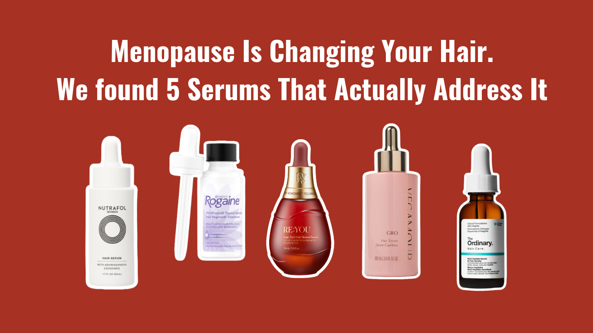
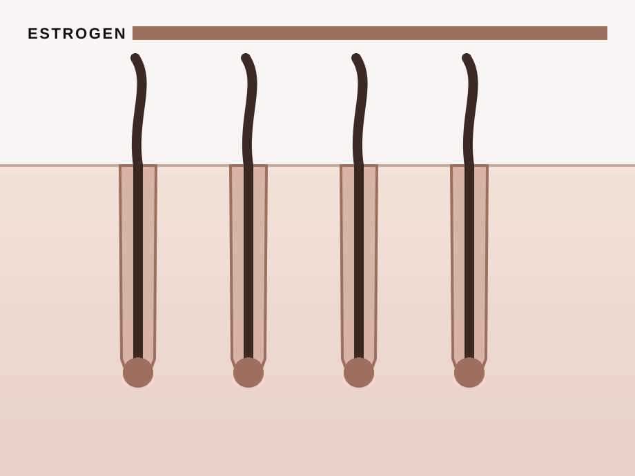

Menopause Is Changing Your Hair. Here's Why, and the 5 Serums That Actually Address It.
When estrogen drops, your hair follicles feel it first. Most serums don't work where that change actually happens.
By Claire Bennett
Share:
Updated Nov 24, 2026 · 7 min read

Working with your hormones, or just coating your hair?
Hair Science
What falling estrogen does to your hair

Estrogen level
30s40sPerimenopause50s+Menopause
As estrogen falls, the growth phase shortens and strands grow back thinner.
Wider part? Thinner ponytail? More hair in your brush? It's probably not your shampoo. It's your hormones.
Estrogen keeps your hair in its growth phase longer. In perimenopause, usually in your 40s, estrogen starts to drop, and androgens like DHT take over. That leads to:
Thinning: Follicles shrink, so each new strand grows back finer.
Shedding: The growth phase gets shorter, so more hair falls out at once.
The result is gradual, all-over thinning, usually a wider part and less volume at the crown.
The takeaway: A serum that only coats your strands won't fix a follicle problem. Look for one that works at the follicle and supports the scalp, without drugs or hormones.
Let's see which serums pass the test.
We judged each serum on three questions:
Targets the follicle? Does it reach where hair actually grows?
Supports the scalp? Does it help the environment around the follicle?
Proof it works? Is there a real study behind it?
Each serum gets a TBB Score out of 10, our editorial rating.
Many brands start with the same catalog of known hair ingredients, build a “new” formula, and end up selling a product that looks just like the rest.
Instead of doing what the rest of the industry had been doing for years, RE:YOU’s team of PhD scientists developed their own novel ingredients. They screened roughly 20 million molecules, and developed three new molecules that directly support the hair follicle system:
NOVOGRO™-623 and NOVOGRO™-624 energize and revitalize the dermal papilla cells.
NOVOGRO™-273 restores the scalp environment, supporting proper oxygen and nutrient flow to the follicle.
That matters in menopause, because hormonal thinning isn’t one problem. It’s a shorter growth phase, shrinking follicles, and a scalp that’s changing too. These molecules go after both, without adding drugs or hormones.
And to prove its efficacy, RE:YOU ran a 190-person, double-blind clinical trial against topical minoxidil, the current gold standard treatment for hair thinning. The women in that study were 35 to 70, the years when estrogen starts to fall. This is the most rigorous trial in the category we’ve seen. At the 90-day checkpoint:
97% saw less shedding (comb test)
89% said their hair looked better (self-reported)
50% more hair growth than minoxidil (machine-measured)
It’s a lightweight, water-based serum you massage into a dry scalp once a day, and it comes with a 90-day money-back guarantee.
TBB TLDR: RE:YOU's dual path hair revival serum targets the follicle and the scalp, tested directly against minoxidil, with no drugs or hormones. Our top pick for menopause thinning.
Minoxidil is the benchmark for a reason. Women’s Rogaine 2% Minoxidil is FDA-approved for female-pattern hair loss, the gradual thinning on top of the scalp that often shows up around menopause. It’s an unscented dropper you use twice a day, and it works best when you start early.
But it's a drug, and it comes with trade-offs. Many women see extra shedding in the first couple of months before things improve. Unwanted facial hair is a known side effect. And the biggest catch: it only works while you use it. Hair loss usually returns within a few months of stopping.
It also doesn't do anything for the hormonal shift itself or for scalp health. It's a growth stimulant, not a fix for the root cause.
TBB TLDR: A medication for the thinning that shows up in menopause, not a serum. You have to keep using it to keep the results, side effects and all.
If you want something plant-based for menopause thinning and don't want a drug, Vegamour GRO Hair Serum is the bottle that shows up first. It's built around red clover, mung bean, turmeric, and caffeine. Those ingredients are commonly cited to soothe the scalp and block hormones linked to thinning, but the brand doesn't show that they reach the follicle where falling estrogen does the damage. Peptides are listed too, without an explanation of what they do.
The proof leans on customer questionnaires rather than a measured clinical study. Nothing about the formula is designed around the estrogen drop of perimenopause and menopause.
TBB TLDR: A plant-based scalp serum, not a menopause formula. Nothing in it is shown to reach the follicle, and the proof is how customers feel rather than anything measured.
Nutrafol is best known for its supplements, including Women's Balance, which is made for perimenopause and menopause and has been tested in a placebo-controlled study. The serum is the topical add-on, built on the brand's "ashwagandha exosome" technology.
Here's the catch: most of Nutrafol's clinical evidence is for the supplements, not the serum on its own. The serum is designed to work as part of a two-product system, which also makes it one of the more expensive routines once you add it all up.
TBB TLDR: A smart add-on if you're already taking Nutrafol Women's Balance. On its own, there's less proof behind it.
At about $24, this is the most affordable way to try a peptide serum. It packs well-known complexes like Redensyl™, Procapil™, Capixyl™, and Baicapil™, plus caffeine, into one lightweight formula.
The ingredients have their own supplier studies, but the finished product hasn't been clinically tested as a whole. And because every ingredient is borrowed from other formulas, there's nothing here designed specifically for hormonal thinning.
TBB TLDR: A solid, low-cost place to start. It isn't built for hormonal thinning, so don't expect it to keep up with the serums above it.
When It Might Be More Than Menopause
Menopause thinning is usually gradual and all over. Check in with your doctor or a dermatologist if:
Your hair is falling out suddenly or in patches
You notice new facial hair growth along with thinning on your scalp
Your scalp is red, inflamed, painful, or bleeding
You're also dealing with fatigue, weight changes, or feeling cold. Thyroid issues and low iron can cause hair loss too.
The Bottom Line
Menopause hair thinning starts at the follicle, so that's where your serum needs to work.
Falling estrogen shortens your hair's growth phase and lets androgens shrink your follicles. A serum that only coats your strands or smells nice won't change that. The serums worth your money go after the follicle and the scalp, and have real proof behind them.
Of the five we looked at, RE:YOU is the only one that targets both, was tested head-to-head against minoxidil, and does it without drugs or hormones. Rogaine is an option, but it's a medication you'll need to use forever. The rest have far less proof behind them.
And if you've tried products before and nothing changed? That's probably not your fault. Most of them were never designed to reach the follicle in the first place.